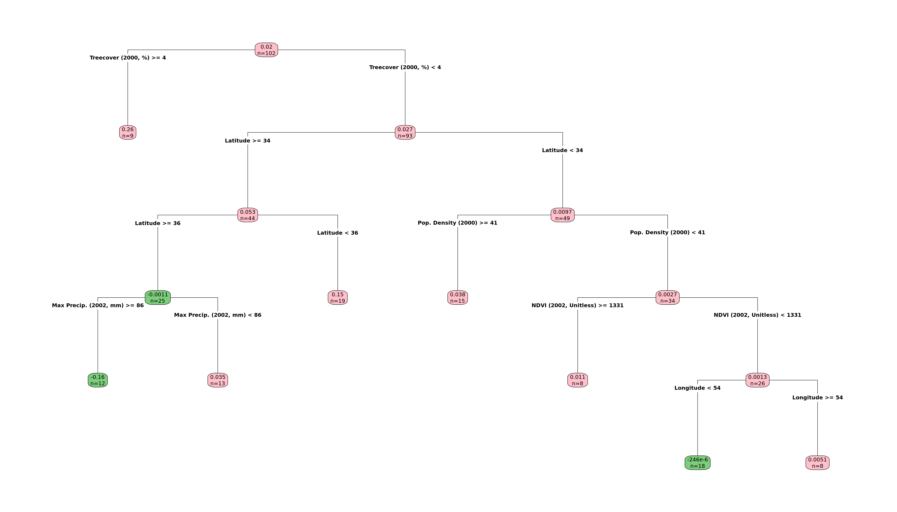
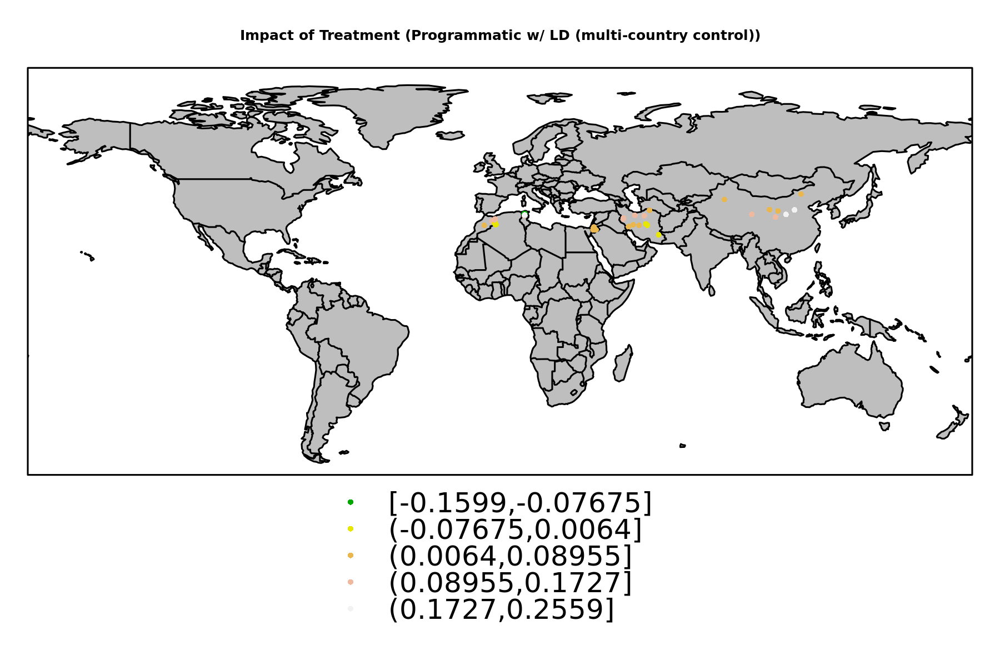

Contrast: Programmatic w/ LD (multi-country control) (Treated), Null case Comparison (Control)
Treatment Cases:
53
Control Cases:
5007

Figure 1. Mean Estimated Impacts from Causal Tree and Random Forest Estimation Strategies.
In this illustration, the blue vertical line is the global estimate of impact from the random forest.
The range of uncertainty is illustrated using a histogram, indicating the proportion of simulations which result in positive or negative estimates.
Specific confidence intervals can be calculated for this global estimate, or for individual project locations. A map of project location uncertainties is presented below.
Descriptive Statistics for Programmatic w/ LD (multi-country control) (Treated) |
| Statistic | Mean | St. Dev. | Min | Median | Max |
|
| Dist. to Rivers (m) | 2,536.13 | 891.46 | 1,220.81 | 2,286.50 | 4,958.55 |
| Dist. to Roads (m) | 5,572.27 | 4,093.49 | 767.50 | 4,115.11 | 25,318.92 |
| Elevation (m) | 1,176.03 | 615.10 | 27.33 | 1,145.01 | 4,120.62 |
| Slope (degrees) | 3.38 | 2.84 | 0.17 | 2.73 | 12.65 |
| Urb. Dist. (rel) | 291.92 | 420.33 | 10.79 | 205.36 | 3,127.78 |
| Pop. Density (2000) | 168.71 | 818.35 | 1.09 | 47.88 | 5,993.88 |
| Protected Area % | 0.42 | 0.86 | 0 | 0 | 4 |
| Treecover (2000, %) | 1.17 | 3.53 | 0.00 | 0.0002 | 21.87 |
| Latitude | 34.25 | 2.91 | 28.50 | 34.01 | 43.50 |
| Longitude | 38.56 | 37.92 | -6.00 | 35.61 | 114.75 |
| Max Precip. (2002, mm) | 71.60 | 29.48 | 11.55 | 67.35 | 151.80 |
| Min Precip (2002, mm) | 2.95 | 4.78 | 0.00 | 0.00 | 12.90 |
| Mean Precip (2002, mm) | 24.40 | 11.09 | 4.02 | 23.56 | 48.17 |
| Max Temp (2002, C) | 26.04 | 4.08 | 14.45 | 26.70 | 38.75 |
| Min Temp (2002, C) | 3.74 | 6.34 | -13.40 | 6.70 | 10.68 |
| Mean Temp (2002, C) | 15.38 | 4.73 | 1.61 | 16.91 | 25.98 |
| Nightime Lights (2002, Relative) | 4.47 | 9.49 | 0.00 | 1.51 | 60.63 |
| NDVI (2002, Unitless) | 1,329.14 | 303.46 | 422.60 | 1,338.14 | 2,293.20 |
| Multi Country | 0.00 | 0.00 | 0 | 0 | 0 |
| Programmatic w/ LD (multi-country control) | 1.00 | 0.00 | 1 | 1 | 1 |
| 2013 Forest Cover (Sq. km) | 314.10 | 0.19 | 313.00 | 314.16 | 314.16 |
|

Propensity Model: Programmatic w/ LD (multi-country control) (Treated), Null case Comparison (Control) |
| Dependent variable: |
| |
| treatment |
|
| Dist. to Rivers (m) | -0.0000 (-0.0001, 0.0001) |
| Dist. to Roads (m) | -0.0000 (-0.0001, 0.0000) |
| Elevation (m) | 0.001** (0.0001, 0.001) |
| Slope (degrees) | 0.08 (-0.03, 0.20) |
| Urb. Dist. (rel) | -0.003*** (-0.005, -0.001) |
| Pop. Density (2000) | 0.001 (-0.0004, 0.002) |
| Protected Area % | 0.41* (-0.02, 0.84) |
| Treecover (2000, %) | -0.12** (-0.23, -0.01) |
| Latitude | 0.16*** (0.05, 0.26) |
| Longitude | -0.01 (-0.02, 0.01) |
| Max Precip. (2002, mm) | -0.002 (-0.02, 0.01) |
| Min Precip (2002, mm) | 0.03 (-0.06, 0.12) |
| Mean Precip (2002, mm) | -0.01 (-0.06, 0.04) |
| Max Temp (2002, C) | 0.16 (-0.14, 0.45) |
| Min Temp (2002, C) | 0.26** (0.005, 0.52) |
| Mean Temp (2002, C) | -0.38 (-0.92, 0.17) |
| Nightime Lights (2002, Relative) | -0.01 (-0.07, 0.05) |
| NDVI (2002, Unitless) | -0.001** (-0.002, -0.0001) |
| Multi Country | -19.93 (-1,349.32, 1,309.46) |
| Constant | -5.38* (-10.81, 0.04) |
|
| Observations | 5,015 |
| Akaike Inf. Crit. | 388.51 |
|
| Note: | *p<0.1; **p<0.05; ***p<0.01 |


Percent Balance Improvement: |
| Mean Diff. | eQQ Med | eQQ Mean | eQQ Max |
|
| Propensity Score | 86.455 | 79.616 | 83.797 | 88.360 |
| Dist. to Rivers (m) | -999.102 | 61.228 | 88.634 | 94.097 |
| Dist. to Roads (m) | 90.654 | 64.244 | 98.151 | 99.403 |
| Elevation (m) | 82.766 | 25.497 | 25.569 | 50.558 |
| Slope (degrees) | -77.075 | -12.171 | 5.354 | 47.683 |
| Urb. Dist. (rel) | 73.091 | 66.364 | 79.558 | 76.108 |
| Pop. Density (2000) | 83.054 | 19.833 | 72.258 | 92.916 |
| Protected Area % | 69.962 | 0 | 9.069 | 0 |
| Treecover (2000, %) | 91.350 | 99.784 | 88.824 | 33.062 |
| Latitude | 67.553 | 86.296 | 62.463 | 5.122 |
| Longitude | 55.962 | 54.387 | 50.847 | 9.796 |
| Max Precip. (2002, mm) | 81.216 | 81.616 | 79.757 | 87.828 |
| Min Precip (2002, mm) | 86.119 | 0 | 74.661 | 90.746 |
| Mean Precip (2002, mm) | 88.686 | 81.395 | 82.601 | 80.527 |
| Max Temp (2002, C) | 55.658 | 10.390 | 30.079 | 47.788 |
| Min Temp (2002, C) | 69.628 | 66.898 | 54.268 | 22.761 |
| Mean Temp (2002, C) | 70.361 | 70.221 | 54.313 | 50.544 |
| Nightime Lights (2002, Relative) | 87.831 | 52.647 | 39.444 | -18.799 |
| NDVI (2002, Unitless) | 81.834 | 69.143 | 59.553 | 41.354 |
| Multi Country | 88.254 | 100 | 88.453 | 0 |
|

Matched Model: Programmatic w/ LD (multi-country control) (Treated), Null case Comparison (Control) |
| Dependent variable: |
| |
| 2013 Forest Cover (Sq. km) |
|
| treatment | -0.03 (-0.23, 0.17) |
| Dist. to Rivers (m) | -0.06 (-0.26, 0.14) |
| Dist. to Roads (m) | 0.06 (-0.19, 0.31) |
| Elevation (m) | 0.004 (-0.43, 0.44) |
| Slope (degrees) | -0.02 (-0.25, 0.20) |
| Urb. Dist. (rel) | -0.21 (-0.52, 0.10) |
| Pop. Density (2000) | -0.24* (-0.53, 0.04) |
| Protected Area % | 0.14 (-0.04, 0.33) |
| Treecover (2000, %) | -0.85*** (-1.29, -0.40) |
| Latitude | -0.46 (-1.08, 0.16) |
| Longitude | 0.31* (-0.03, 0.65) |
| Max Precip. (2002, mm) | -0.10 (-0.83, 0.63) |
| Min Precip (2002, mm) | -0.20 (-0.60, 0.19) |
| Mean Precip (2002, mm) | 0.30 (-0.76, 1.35) |
| Max Temp (2002, C) | -0.01 (-0.97, 0.95) |
| Min Temp (2002, C) | 0.02 (-1.44, 1.49) |
| Mean Temp (2002, C) | -0.08 (-2.30, 2.14) |
| Nightime Lights (2002, Relative) | 0.14 (-0.13, 0.40) |
| NDVI (2002, Unitless) | -0.09 (-0.45, 0.26) |
| Multi Country | 0.16 (-0.05, 0.38) |
| Pop. Density (2000) *Treatment | -0.25** (-0.49, -0.005) |
| Latitude *Treatment | -0.44 (-1.02, 0.14) |
| Longitude *Treatment | 0.22** (0.01, 0.42) |
| NDVI (2002, Unitless) *Treatment | 0.09 (-0.24, 0.41) |
| Treecover (2000, %) *Treatment | -0.34 (-0.80, 0.11) |
| Max Precip. (2002, mm) *Treatment | 0.17 (-0.18, 0.52) |
| Constant | 0.07 (-0.13, 0.27) |
|
| Observations | 102 |
| R2 | 0.57 |
| Adjusted R2 | 0.42 |
|
| Note: | *p<0.1; **p<0.05; ***p<0.01 |
Standardized Beta Coefficients for Linear Model with Heterogeneous Effects
